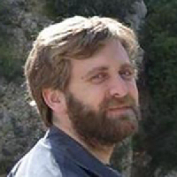
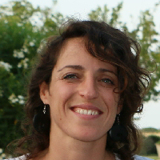
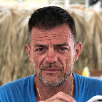
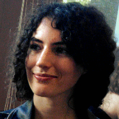
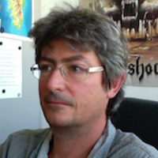

Study of phase polyphenism emergence and associated risks |
About | Locust species alternatively display harmless solitarious and gregarious phenotypes. Gregarious phenotypes create migrating bands and swarms that are devastating for all types of agriculture. This plasticity, named phase polyphenism, has been hypothesized as an evolutionary response to cannibalism avoidance. Group movement was also proposed as an adaptation to predation risk. Alternatively, we propose that phase polyphenism could emerge as a response to variable conditions of resource, mainly vegetation. The hypothesis is that these environmental conditions change the trade-offs of costs and benefits of being in the group and interacting strongly with congeners. Group selection may occur on behaviors of grouping and/or collective movement as these could be considered as a form of cooperative behavior. |
| People | Cyril Piou is an expert ecological modeler with long experience on agent-based models. He has been working on locust ecology since 2010. |
| Marie-Pierre Chapuis focuses her research on population ecology and evolution of insect species. She has a long history with locust species (since 2003) and has explored reaction norms and/or genetic parameters of polyphenic phase traits (e.g. behavior, growth, morphology, reproduction). | |
| Pierre-Emmanuel Gay is an engineer and a geographer. He has been working on modeling locust issues since 2012. | |
| Camille Vernier joined us in September 2019 to prepare a doctoral thesis on the evolution of phase polyphenism using agent-based demogenetic models. | |
| Jean-Pierre Rossi is a senior scientist. His research interests cover forest and crop entomology with a special focus on landscape and spatial dynamics of pests. He has been an avid R language user for circa 15 years. |
| Institutions |  The French Agricultural Research Centre for International Development works for the sustainable development of tropical and Mediterranean regions. The French Agricultural Research Centre for International Development works for the sustainable development of tropical and Mediterranean regions.Cirad activities concern the life sciences, social sciences and engineering sciences, applied to agriculture, food, the environment and territorial management. Cirad works focus on several main topics: food security, climate change, natural resource management, reduction of inequalities and poverty alleviation. |
 The Centre for Biology and Management of Populations carries out research in the fields of systematics, genetics and ecology relevant to the management of populations and communities of organisms for the purposes of agriculture, public health and biodiversity. The Centre for Biology and Management of Populations carries out research in the fields of systematics, genetics and ecology relevant to the management of populations and communities of organisms for the purposes of agriculture, public health and biodiversity.CBGP aims to characterize the diversity of these organisms, to understand structure and factors which modify them, to predict their evolution in a context of global changes. CBGP leads academic researches while making so that the results of research programs can drive to the elaboration of scenarios or decision-making tools dedicated to the management of pest and diseases or the conservation of endangered species. |
|
 The French National Research Agency is a public administrative institution under the authority of the French Ministry of Higher Education, Research and Innovation. The French National Research Agency is a public administrative institution under the authority of the French Ministry of Higher Education, Research and Innovation.ANR funds project-based research carried out by public operators cooperating with each other or with private companies. ANR also aims to strengthen the position of French research at European level and worldwide. |
| Objectives | The first objective of PEPPER will be to theoretically explore the trade-offs and environmental conditions leading to phase polyphenism emergence. Identifying the regimes of environmental variation of resources favorable to phase polyphenism evolution may help in identifying conditions of outbreaks. |
| The second objective of PEPPER will be to develop a forecasting model of locust population dynamics and validate it using field data from locust observations. | Demogenetic agent-based models should be used in the first objective. The second objective will also benefit from integrating the biological knowledge on the Desert locust within a mechanistic agent-based model that will consider remote-sensing imagery to represent environmental drivers. Pattern-oriented modeling will be applied to both objectives to select the processes to consider in the models and adjust them to real-world data. |
| Contact |
© 2019 Cirad